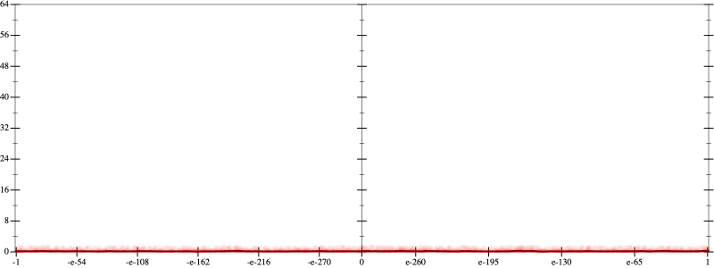
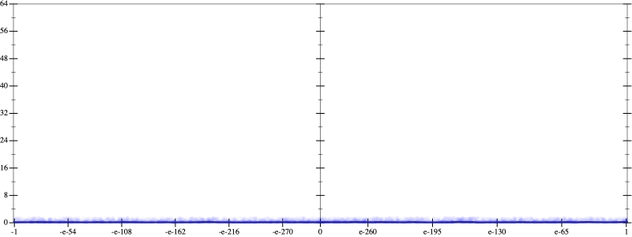
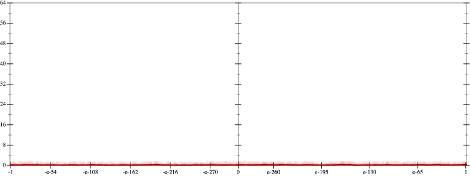
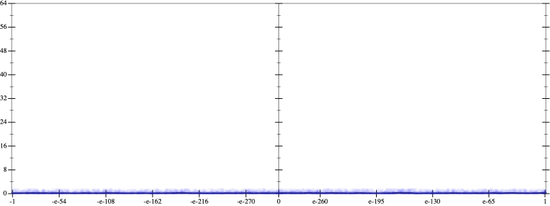
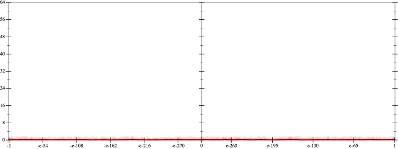
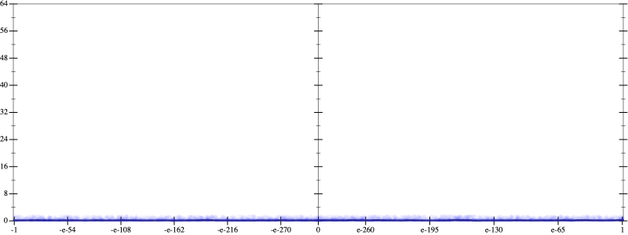

Error
 
Bits error versus x
Bits error versus x
Results
Initial program 0.2
Time bar (total: 5.9m)Debug log
herbie shell --seed 535647396
(FPCore (x)
:name "3"
:pre (and (>= x -10.0) (<= x 10.0))
(+ (* -12.0 x) (* 8.0 (* (* x x) x))))